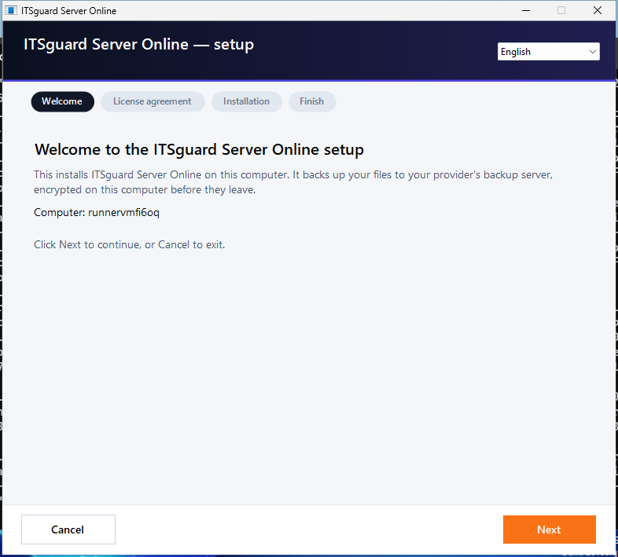
window only

window only

window only
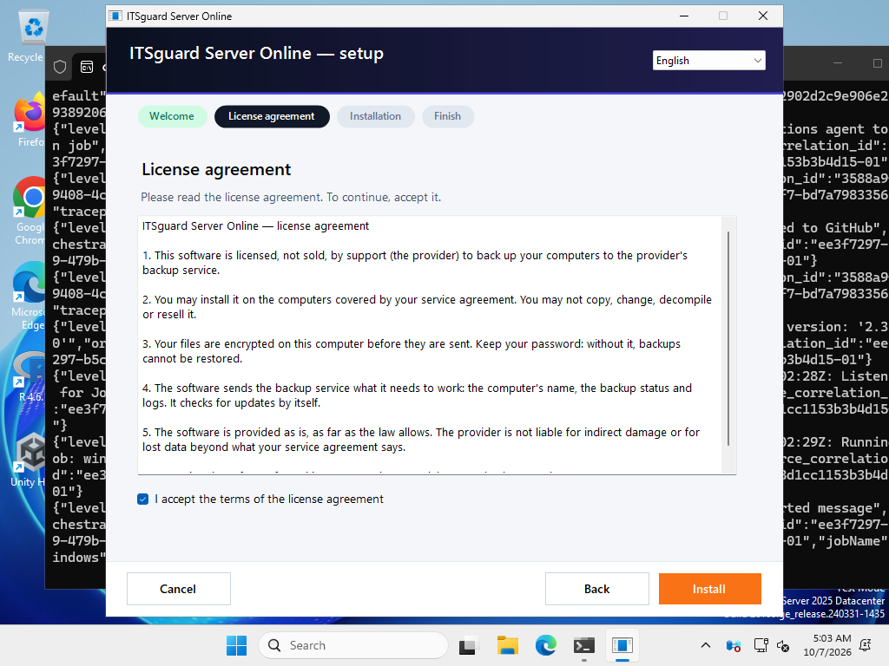
window only
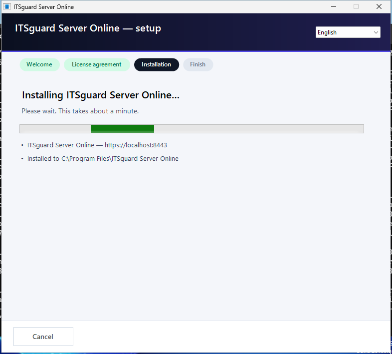
window only
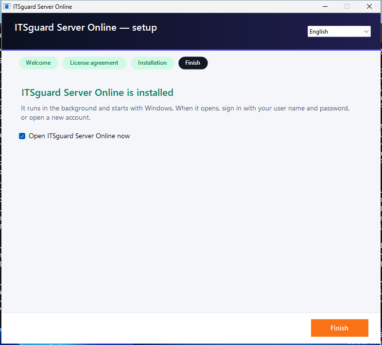
window only

window only
phase: main | windows: Microsoft Windows Server 2025 Datacenter 10.0.26100 build 26100 | computer: runnervmfi6oq | package: OnlineBackup-Server-0.1.22.zip | commit: e600bdd91a5c54bde0f725c41fbf9c961eafa44a | run: 37574066600 | started: 2026-10-07T05:02:58.4596352+00:00 | resolution: 1024x768 | dpi: 100 | powershell: 5.1.26100.33438 | interactive: True | user: runnervmfi6oq\runneradmin
FUNCTIONAL: the action worked, proven from outside the product (Windows, the server, SHA-256). VISUAL: no visual finding of severity Medium or High on its screens. UX: every written flow check passed. A screenshot never proves a backup: only the SHA-256 comparison does.
| Journey | FUNCTIONAL | VISUAL | UX | Why not PASS |
|---|---|---|---|---|
| W01 Server: install from the real package (Windows service) and sign in | PASS | NOT TESTED | NOT TESTED | |
| W02 Installer failure: a damaged Setup.exe installs nothing and says so | PASS | PASS | PASS | |
| W03 Client installation through the installer window, proven by Windows | PASS | FAIL | FAIL | |
| W04 First run: sign in through the window, the agent connects to the server | PASS | FAIL | PASS | |
| W05 FULL CHAIN: backup set in the window -> Back up now -> delete the source -> Restore in the window -> SHA-256 | PASS | FAIL | PASS | |
| W06 Service restart: Windows restarts the backup service, then backup and restore again | PASS | FAIL | PASS | |
| W07 Agent crash mid-backup: the process is killed; Windows brings it back; no ghost run; the next backup restores identical | PASS | FAIL | PASS | |
| W08 Service stopped mid-backup: the run ends cleanly; start; backup and restore identical | FAIL | FAIL | PASS | The backup is running: live=False || Stop the service (Windows service manager) while it backs up: Stopped; live job when stopped '' || The stopped run is closed on the server (not running): live 0; job '': not recorded |
| W09 Server crash mid-backup: the server process is killed; Windows restarts it; the next backup restores identical | FAIL | FAIL | PASS | The backup is running: live=False || Kill the server process: pid 8604; live job '' || No ghost run after the server came back: live 0; job '': never closed (an open run left behind) |
| W10 VSS: a file locked by another program is backed up through the shadow copy; no shadow copy is left behind | PASS | FAIL | PASS | |
| W11 VSS failure: the shadow copy service is disabled; the locked file is reported, never a silent success; recovery | FAIL | FAIL | PASS | The result names the problem (not a plain success): result BS_STOP_SUCCESS_WITH_WARNING; log mentions: |
| W12 Permission denied: a folder the service may not read is an error, not a deletion; recovery | PASS | FAIL | PASS | |
| W13 Service that does not start: its program file is missing (as after an antivirus quarantine); Repair in the installer window brings it back | FAIL | FAIL | FAIL | Maintenance - Setup sees the installation (repair): Welcome to the ITSguard Server Online setup | This installs ITSguard Server Online on this computer. It backs up your files to your provider's backup server, encrypted on this computer before they leave. | Computer: runnervmfi6oq | Click Next to continue, or Cancel to exit. | English | Next | Cancel || After Repair: the file is back and the service runs: Stopped || the journey stopped: You cannot call a method on a null-valued expression. @ line 362 |
| W14 Update of the agent: interrupted update rolls back; then Update in the window; backup and restore after | FAIL | NOT TESTED | NOT TESTED | the journey stopped: You cannot call a method on a null-valued expression. @ line 373 |
| W15 Uninstall through the installer window, reinstall, sign in again, backup and restore | FAIL | FAIL | FAIL | Maintenance - Setup sees the installation (remove): Welcome to the ITSguard Server Online setup | This installs ITSguard Server Online on this computer. It backs up your files to your provider's backup server, encrypted on this computer before they leave. | Computer: runnervmfi6oq | Click Next to continue, or Cancel to exit. | English | Next | Cancel || Removed: no service, no entry in the installed programs, no program files: service True; entries 1; files False |
| W16 Visual tour: every screen in English and Hebrew at 1920x1080, 1366x768 and 1024x768 | PASS | FAIL | NOT TESTED | |
| W17 System State backup (Windows Server Backup) | FAIL | FAIL | NOT TESTED | The System State set is added: ITSguard Server Online: No folders were chosen for backup. |
| W18 Reboot | NOT TESTED | NOT TESTED | NOT TESTED | a GitHub-hosted runner cannot restart (the job ends with the machine). The real reboot runs in the virtual-machine job (phase before-reboot / after-reboot). |
| Step | Result | Expected | Actual (what the oracle saw) | Screen |
|---|---|---|---|---|
| install-server.ps1 in Windows PowerShell (as the README says) | PASS | exit 0, service OnlineBackupServer Running | exit 0; Running | |
| The server service starts again with the licence | PASS | Running | Running | |
| Server service: automatic start, restarts after a failure | PASS | StartMode Auto, failure actions = restart | Auto; RESET_PERIOD (in seconds) : 86400 FAILURE_ACTIONS : RESTART -- Delay = 60000 milliseconds. RESTART -- Delay = 60000 milliseconds. RESTART -- Delay = 300000 milliseconds. | |
| Admin sign-in over HTTPS (password + authenticator) | PASS | a session | HTTP 200 | |
| A customer account for this computer | PASS | user qa-win | 1 users | |
| Download the client Setup.exe from the server (what the IT company hands out) | PASS | a signed-size program | HTTP 200, 13894548 bytes |
Evidence: windows-state.json · event-log.txt · service-events.txt · install-server.txt · server-logs
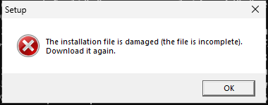
| Step | Result | Expected | Actual (what the oracle saw) | Screen |
|---|---|---|---|---|
| The damaged file says it is damaged | PASS | a message: damaged, download again | The installation file is damaged (the file is incomplete). Download it again. OK | The installation file is damaged (the file is incomplete). Download it again. | 01-The-damaged-file-says-it-is-damaged.png |
| Nothing was installed (Windows service manager, installed programs) | PASS | no service, no entry | service: False; entries: 0 | |
| UX: Installer: a damaged download tells the customer what to do | PASS | download it again | The installation file is damaged (the file is incomplete). Download it again. OK | The installation file is damaged (the file is incomplete). Download it again. |
Evidence: windows-state.json · event-log.txt · service-events.txt · server-logs




| Step | Result | Expected | Actual (what the oracle saw) | Screen |
|---|---|---|---|---|
| Setup.exe opens its window | PASS | the setup window within 120 s | ITSguard Server Online | |
| Installer 01 - Welcome | PASS | Welcome, the product, Next and Cancel | Welcome to the ITSguard Server Online setup | This installs ITSguard Server Online on this computer. It backs up your files to your provider's backup server, encrypted on this computer before they leave. | Computer: runnervmfi6oq | Click Next to continue, or Cancel to exit. | English | Next | Cancel | 01-Installer-01---Welcome.png |
| Installer 02 - License agreement | PASS | the license text and an accept box | License agreement | Please read the license agreement. To continue, accept it. | ITSguard Server Online — license agreement 1. This software is licensed, not sold, by support (the provider) to back up your computers to the provider's backup service. 2. You may install it on the computers covered by your service agreement. You may not copy, change, decompile or resell it. 3. Your files are encrypted on this computer before they are sent. Keep your password: without it, backups cannot be restored. 4. The software sends the backup service what it needs to work: the computer's name, the backup status and logs. It checks for updates by itself. 5. The software is provided as is, as far as the law allows. The provider is not liable for indirect damage or for lost data beyond what your service agreement says. 6. Removing the software from this computer does not delete your backups on the server. | I accept the terms of the license agreement | English | Back | Install | Cancel | 02-Installer-02---License-agreement.png |
| Install is disabled before the license is accepted | PASS | not enabled | enabled=False | |
| Back returns to Welcome, Next comes back | PASS | Welcome, then the license again | Welcome to the ITSguard Server Online setup | This installs ITSguard Server Online on this computer. It backs up your files to your provider's backup server, encrypted on this computer before they leave. | Computer: runnervmfi6oq | Click Next to continue, or Cancel to exit. | English | Next | Cancel | |
| Accept the license (tick the box) | PASS | ticked, Install enabled | ticked= install enabled=True | |
| Installer pages that exist | info | Welcome -> License agreement -> Installation (progress) -> Finish. There is no configuration page (folder, options) and no "Ready to install" page in the current installer. | ||
| Installer 04 - Installing (progress) | PASS | an "Installing" page with a progress bar | Installing ITSguard Server Online… | Please wait. This takes about a minute. | • ITSguard Server Online — https://localhost:8443 | • Installed to C:\Program Files\ITSguard Server Online | English | Cancel | 05-Installer-04---Installing--progress-.png |
| Installer 05 - Finish | PASS | the Finish page says it is installed | ITSguard Server Online is installed | It runs in the background and starts with Windows. When it opens, sign in with your user name and password, or open a new account. | Open ITSguard Server Online now | English | Finish | 06-Installer-05---Finish.png |
| The setup window closes after Finish | PASS | no setup window | 0 window(s) left | |
| Windows service manager: the backup service exists, starts automatically and is Running | PASS | OnlineBackupAgent Running, Auto | Running Auto as LocalSystem | |
| Its process runs from the installed program | PASS | the service PID is OnlineBackup.Agent.exe in the install folder | pid 7760 C:\Program Files\ITSguard Server Online\OnlineBackup.Agent.exe | |
| Installed programs list (Apps / Programs and Features) | PASS | one entry with a name, version and an uninstall command | ITSguard Server Online 0.1.22 [ITSguard Server Online] C:\Program Files\ITSguard Server Online | |
| The program files on disk | PASS | Agent, Client, Core, BouncyCastle, restic in the install folder | C:\Program Files\ITSguard Server Online; missing: | |
| The settings folder (ProgramData) belongs to SYSTEM and Administrators only | PASS | no Users / Everyone access | NT AUTHORITY\SYSTEM:FullControl; BUILTIN\Administrators:FullControl | |
| Start menu shortcut and start with Windows | PASS | a shortcut to the program, and one with --tray in Startup | C:\Users\Public\Desktop\ITSguard Server Online.lnk ; C:\ProgramData\Microsoft\Windows\Start Menu\Programs\ITSguard Server Online.lnk ; C:\ProgramData\Microsoft\Windows\Start Menu\Programs\Startup\ITSguard Server Online.lnk --tray; C:\ProgramData\Microsoft\Windows\Start Menu\Programs\Startup\ITSguard Server Online.lnk --tray | |
| Finish with "Open now" opens the program window | PASS | the program window | ITSguard Server Online | 07-Finish-with--Open-now--opens-the-program-window.png |
| UX: Installer: the first page says what will be installed | PASS | the product name and what it does | Welcome to the ITSguard Server Online setup | This installs ITSguard Server Online on this computer. It backs up your files to your provider's backup server, encrypted on this computer before they leave. | Computer: runnervmfi6oq | Click Next to continue, or Cancel to exit. | English | Next | Cancel | |
| UX: Installer: a license agreement must be accepted before installing | PASS | Install disabled until accepted | enabled=False | |
| UX: Installer: a "Ready to install" summary before installing | FAIL | a page listing what will be installed and where | the license page's button installs at once (no configuration or ready page) | |
| UX: Installer: progress is visible while installing | PASS | a progress bar and what is being done | see the screenshot | |
| UX: Installer: the last page says the result and what to do next | PASS | installed + how to sign in | ITSguard Server Online is installed | It runs in the background and starts with Windows. When it opens, sign in with your user name and password, or open a new account. | Open ITSguard Server Online now | English | Finish |
Evidence: windows-state.json · event-log.txt · service-events.txt · server-logs
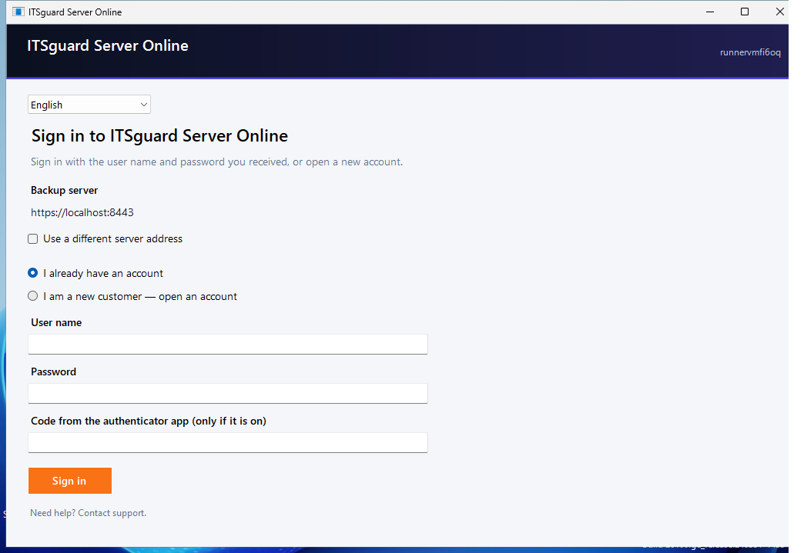
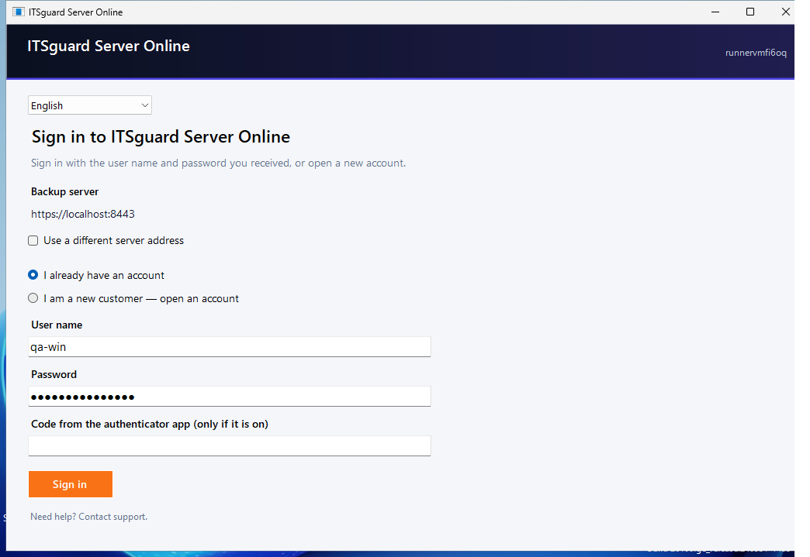
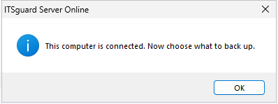
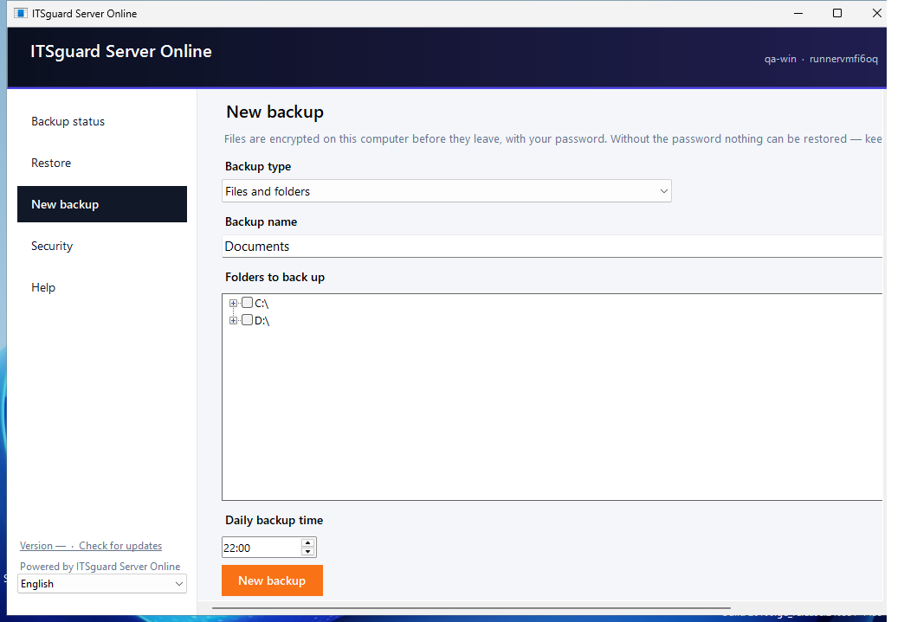
| Step | Result | Expected | Actual (what the oracle saw) | Screen |
|---|---|---|---|---|
| Client 01 - First run: the sign-in page | PASS | Sign in, the server, user name and password | English | Sign in to ITSguard Server Online | Sign in with the user name and password you received, or open a new account. | Backup server | https://localhost:8443 | Use a different server address | I already have an account | I am a new customer — open an account | User name | Password | Code from the authenticator app (only if it is on) | Sign in | Need help? Contact support. | 01-Client-01---First-run--the-sign-in-page.png |
| Accessibility | info | the field 'User name' has no name in UI Automation (a screen reader says only 'edit'); the robot found it under its label | ||
| Accessibility | info | the field 'Password' has no name in UI Automation (a screen reader says only 'edit'); the robot found it under its label | ||
| Messages while signing in | info | ITSguard Server Online: This computer is connected. Now choose what to back up. | ||
| Client 04 - Connected: the program asks what to back up | PASS | the "New backup" page | New backup | Files are encrypted on this computer before they leave, with your password. Without the password nothing can be restored — keep it safe. | Backup type | Files and folders | Backup name | Documents | Folders to back up | Daily backup time | 22:00 | New backup | Backup status | Restore | New backup | Security | Help | Version — · Check for updates | English | Powered by ITSguard Server Online | 04-Client-04---Connected--the-program-asks-what-to-back-up.png |
| ORACLE (server): this computer is registered and connected | PASS | the computer in the customer's list, connected | runnervmfi6oq connected=1 seen=1791349442257 version=0.1.22.0 | |
| UX: Client: the first screen asks only for what the customer received | PASS | server (pre-filled), user name, password | English | Sign in to ITSguard Server Online | Sign in with the user name and password you received, or open a new account. | Backup server | https://localhost:8443 | Use a different server address | I already have an account | I am a new customer — open an account | User name | Password | Code from the authenticator app (only if it is on) | Sign in | Need help? Contact support. | |
| UX: Client: after signing in the program says the computer is connected and what to do next | PASS | a confirmation and the next step | ITSguard Server Online: This computer is connected. Now choose what to back up. |
Evidence: windows-state.json · event-log.txt · service-events.txt · server-logs
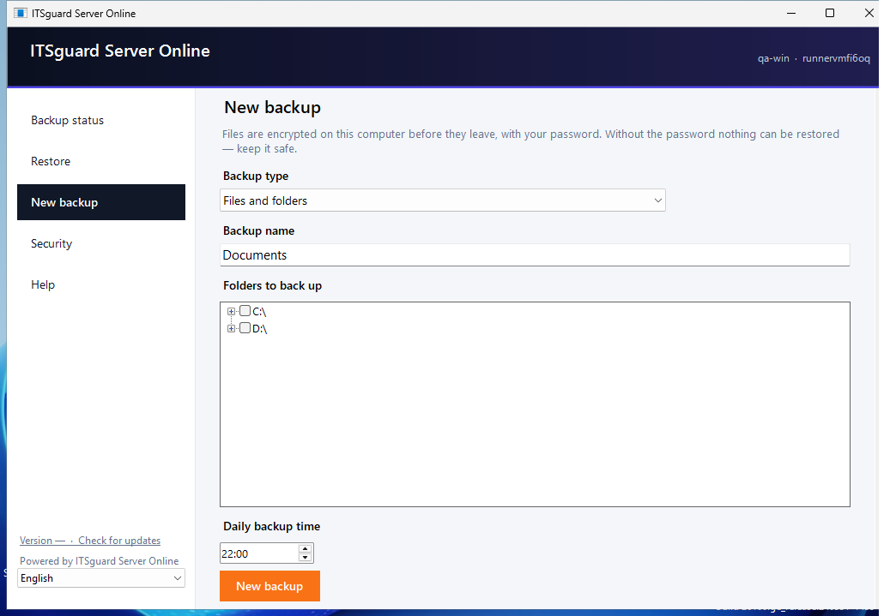
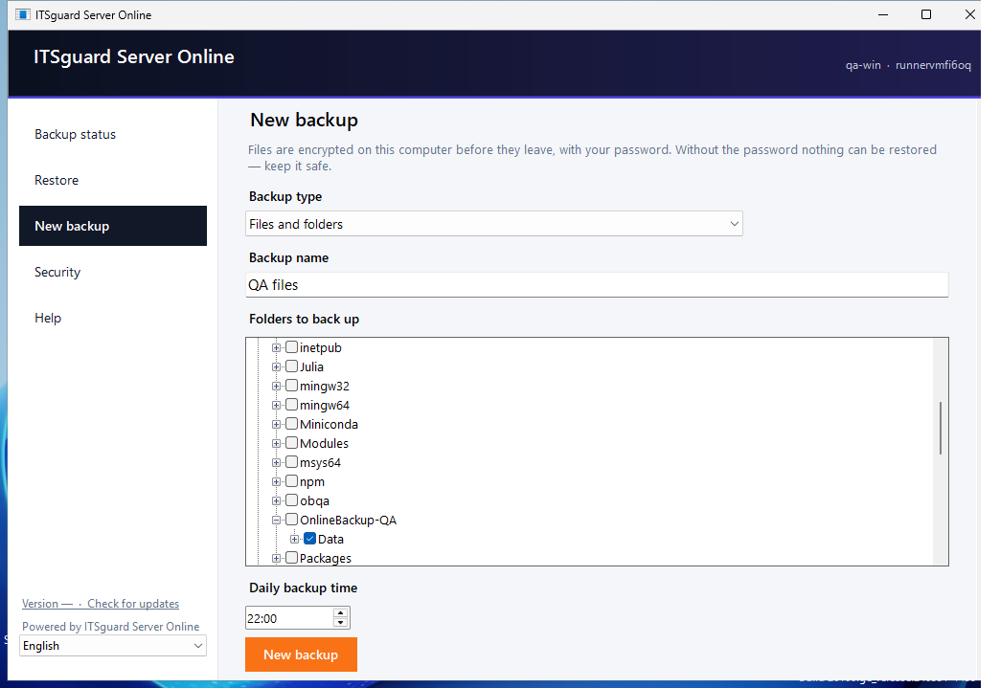
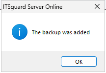
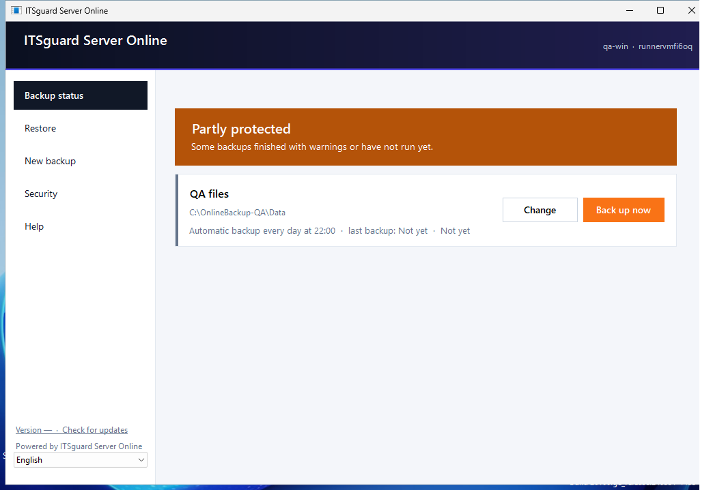


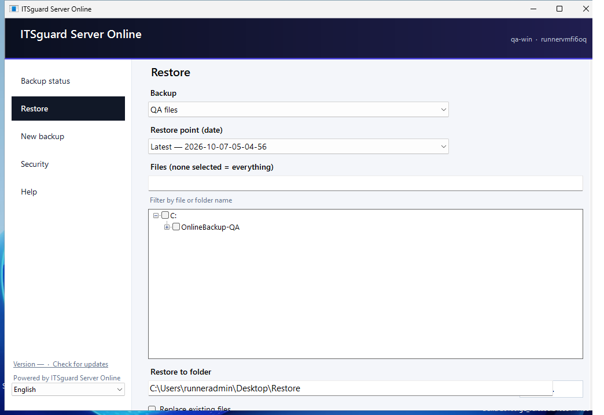
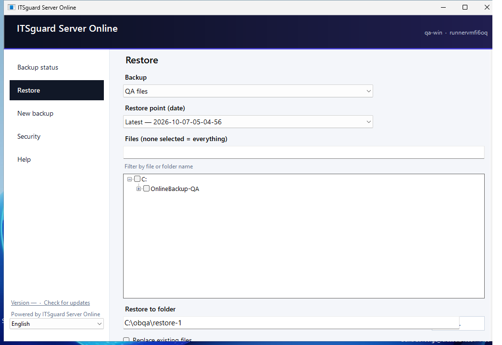

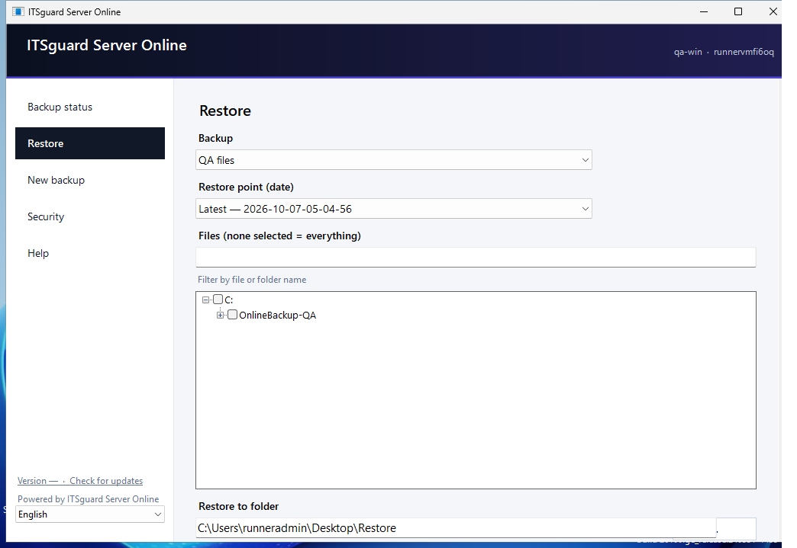
| Step | Result | Expected | Actual (what the oracle saw) | Screen |
|---|---|---|---|---|
| The golden dataset | info | 112 files: text, Hebrew and Japanese names, spaces, an empty file, 20 MB + 3 MB random, duplicates, 100 small files, a long path, read-only and hidden files | ||
| Client 05 - New backup page | PASS | type, name, the folder tree, time, the button | New backup | Files are encrypted on this computer before they leave, with your password. Without the password nothing can be restored — keep it safe. | Backup type | Files and folders | Backup name | Documents | Folders to back up | Daily backup time | 22:00 | New backup | Backup status | Restore | New backup | Security | Help | Version — · Check for updates | English | Powered by ITSguard Server Online | 01-Client-05---New-backup-page.png |
| Accessibility | info | the field 'Backup name' has no name in UI Automation (a screen reader says only 'edit'); the robot found it under its label | ||
| Tick the folder in the tree | info | C:\OnlineBackup-QA\Data (keyboard: name typed, space bar); not readable through UI Automation - the server's copy of the set is the proof (next step) | ||
| Messages when adding the backup | info | ITSguard Server Online: The backup was added | ||
| Client 08 - The backup is listed on the status page | PASS | a card 'QA files' with Back up now | Partly protected | Some backups finished with warnings or have not run yet. | Change | Back up now | QA files | C:\OnlineBackup-QA\Data | Automatic backup every day at 22:00 · last backup: Not yet · Not yet | Backup status | Restore | New backup | Security | Help | Version — · Check for updates | English | Powered by ITSguard Server Online || ITSguard Server Online: The backup was added | 04-Client-08---The-backup-is-listed-on-the-status-page.png |
| ORACLE (server): the backup set exists with the chosen folder | PASS | a set 'QA files' with source C:\OnlineBackup-QA\Data | set id 1791349475674; sources C:\OnlineBackup-QA\Data; computer runnervmfi6oq | |
| Backup 1 - result | PASS | the server records a new run: ok; the window shows the result | server: BS_STOP_SUCCESS (new 112, bytes 24174191); window: Automatic backup every day at 22:00 · last backup: 2026-10-07-05-05-04 · Completed successfully ; messages: ITSguard Server Online: The backup has started | 07-Backup-1---result.png |
| Restore 1 - the source folder is deleted | PASS | no source folder (moved out of the product's reach until the check is done) | C:\OnlineBackup-QA\Data (kept by the robot in C:\obqa\source-aside-1) | |
| Restore 1 - Restore page | PASS | the backup, the latest point, the files, the folder | Restore | Backup | QA files | Restore point (date) | Latest — 2026-10-07-05-04-56 | Files (none selected = everything) | Filter by file or folder name | Restore to folder | C:\Users\runneradmin\Desktop\Restore | … | Replace existing files | Restore | Backup status | Restore | New backup | Security | Help | Version — · Check for updates | English | Powered by ITSguard Server Online | 08-Restore-1---Restore-page.png |
| Accessibility | info | the field 'Restore to folder' has no name in UI Automation (a screen reader says only 'edit'); the robot found it under its label | ||
| Restore 1 - messages | info | ITSguard Server Online: The restore has started — follow it in the "Backup status" tab | ||
| Restore 1 - ORACLE: every restored file has the SHA-256 of the original | PASS | 112 files identical, nothing missing or extra | server: RESTORE_STOP_SUCCESS; files 112/112; differences 0: | |
| UX: Backup 1 - the window shows the result of the backup | PASS | the card says the result | Automatic backup every day at 22:00 · last backup: 2026-10-07-05-05-04 · Completed successfully |
Evidence: windows-state.json · event-log.txt · service-events.txt · server-logs · 1-differences.txt · 1-restored.sha256 · source.sha256


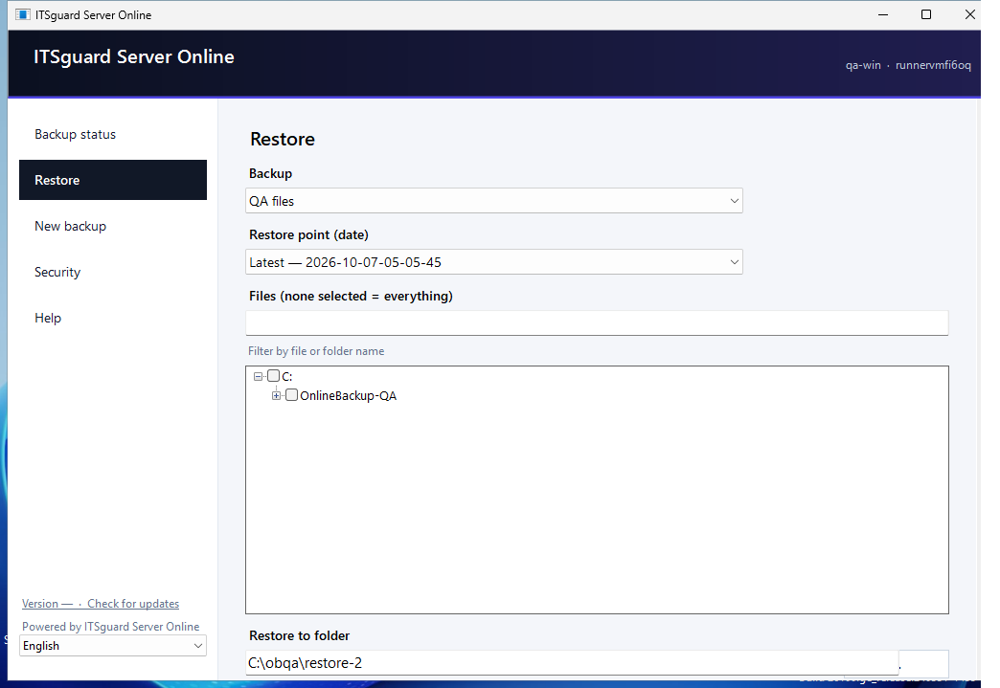
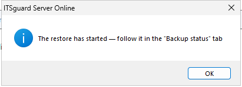

| Step | Result | Expected | Actual (what the oracle saw) | Screen |
|---|---|---|---|---|
| Restart the service (Windows service manager) | PASS | Running again | Running | |
| Backup after restart - result | PASS | the server records a new run: ok; the window shows the result | server: BS_STOP_SUCCESS (new 0, bytes 554); window: Automatic backup every day at 22:00 · last backup: 2026-10-07-05-05-46 · Completed successfully ; messages: ITSguard Server Online: The backup has started | 03-Backup-after-restart---result.png |
| Restore after restart - the source folder is deleted | PASS | no source folder (moved out of the product's reach until the check is done) | C:\OnlineBackup-QA\Data (kept by the robot in C:\obqa\source-aside-2) | |
| Accessibility | info | the field 'Password' has no name in UI Automation (a screen reader says only 'edit'); the robot found it under its label | ||
| Restore after restart - sign-in when the Restore page opened | info | Sign in: Sign in Restoring and adding backups require your password. Password Verification code (if enabled) | ||
| Restore after restart - Restore page | PASS | the backup, the latest point, the files, the folder | Restore | Backup | QA files | Restore point (date) | Latest — 2026-10-07-05-05-45 | Files (none selected = everything) | Filter by file or folder name | Restore to folder | C:\Users\runneradmin\Desktop\Restore | … | Replace existing files | Restore | Backup status | Restore | New backup | Security | Help | Version — · Check for updates | English | Powered by ITSguard Server Online | 05-Restore-after-restart---Restore-page.png |
| Accessibility | info | the field 'Restore to folder' has no name in UI Automation (a screen reader says only 'edit'); the robot found it under its label | ||
| Restore after restart - messages | info | ITSguard Server Online: The restore has started — follow it in the "Backup status" tab | ||
| Restore after restart - ORACLE: every restored file has the SHA-256 of the original | PASS | 112 files identical, nothing missing or extra | server: RESTORE_STOP_SUCCESS; files 112/112; differences 0: | |
| UX: Backup after restart - the window shows the result of the backup | PASS | the card says the result | Automatic backup every day at 22:00 · last backup: 2026-10-07-05-05-46 · Completed successfully |
Evidence: windows-state.json · event-log.txt · service-events.txt · server-logs · 2-differences.txt · 2-restored.sha256
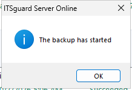

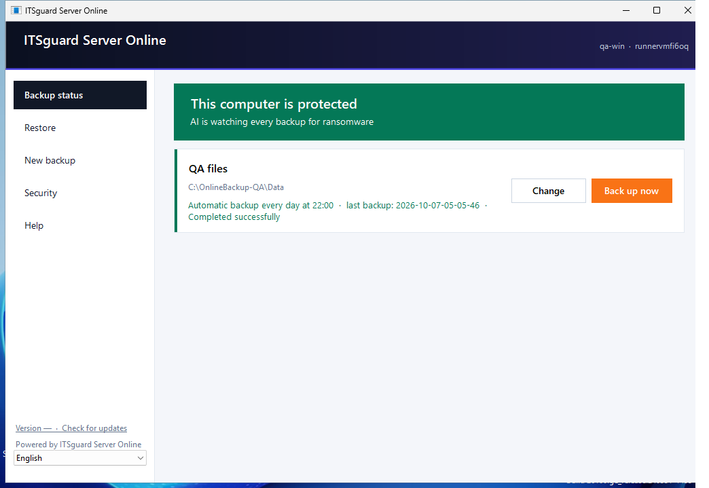

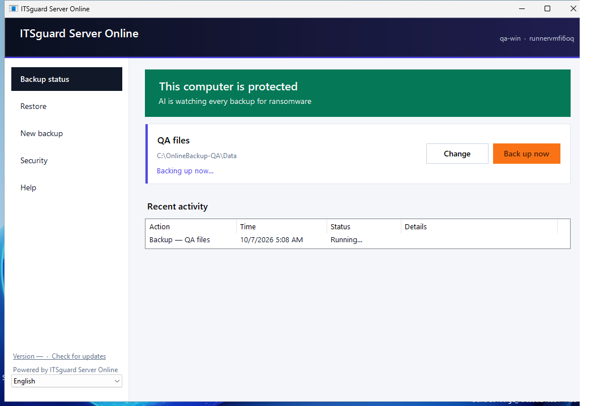
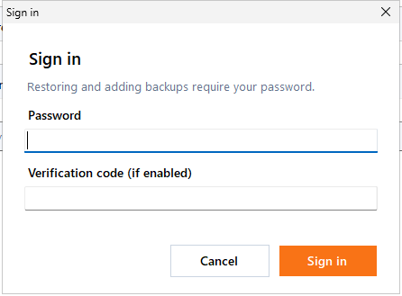


| Step | Result | Expected | Actual (what the oracle saw) | Screen |
|---|---|---|---|---|
| The backup is running (server live view) | PASS | a live run | live=True | |
| Kill the service process (as a crash) | PASS | killed WHILE the run is live (its job id read from the server just before) | pid 6060; live job '2026-10-07-05-06-52' | |
| Windows restarts the service by itself (failure actions) | PASS | Running with a new process within 3 minutes | Running pid 6872 | |
| No ghost: the killed run is not "running" any more | PASS | not in the live view; THIS run (its job id) recorded as interrupted | live 0; job '2026-10-07-05-06-52' recorded: BS_STOP_BY_SYSTEM_ERROR | |
| Backup after the crash - result | PASS | the server records a new run: ok; the window shows the result | server: BS_STOP_SUCCESS (new 1, bytes 629242153); window: Automatic backup every day at 22:00 · last backup: 2026-10-07-05-08-39 · Completed successfully ; messages: ITSguard Server Online: The backup has started | 07-Backup-after-the-crash---result.png |
| Restore after the crash - the source folder is deleted | PASS | no source folder (moved out of the product's reach until the check is done) | C:\OnlineBackup-QA\Data (kept by the robot in C:\obqa\source-aside-3) | |
| Accessibility | info | the field 'Password' has no name in UI Automation (a screen reader says only 'edit'); the robot found it under its label | ||
| Restore after the crash - sign-in when the Restore page opened | info | Sign in: Sign in Restoring and adding backups require your password. Password Verification code (if enabled) | ||
| Restore after the crash - Restore page | PASS | the backup, the latest point, the files, the folder | Restore | Backup | QA files | Restore point (date) | Latest — 2026-10-07-05-08-13 | Files (none selected = everything) | Filter by file or folder name | Restore to folder | C:\Users\runneradmin\Desktop\Restore | … | Replace existing files | Restore | Backup status | Restore | New backup | Security | Help | Version — · Check for updates | English | Powered by ITSguard Server Online | 09-Restore-after-the-crash---Restore-page.png |
| Accessibility | info | the field 'Restore to folder' has no name in UI Automation (a screen reader says only 'edit'); the robot found it under its label | ||
| Restore after the crash - messages | info | ITSguard Server Online: The restore has started — follow it in the "Backup status" tab | ||
| Restore after the crash - ORACLE: every restored file has the SHA-256 of the original | PASS | 113 files identical, nothing missing or extra | server: RESTORE_STOP_SUCCESS; files 113/113; differences 0: | |
| UX: Backup after the crash - the window shows the result of the backup | PASS | the card says the result | Automatic backup every day at 22:00 · last backup: 2026-10-07-05-08-39 · Completed successfully |
Evidence: windows-state.json · event-log.txt · service-events.txt · server-logs · 3-differences.txt · 3-restored.sha256
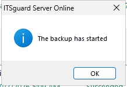
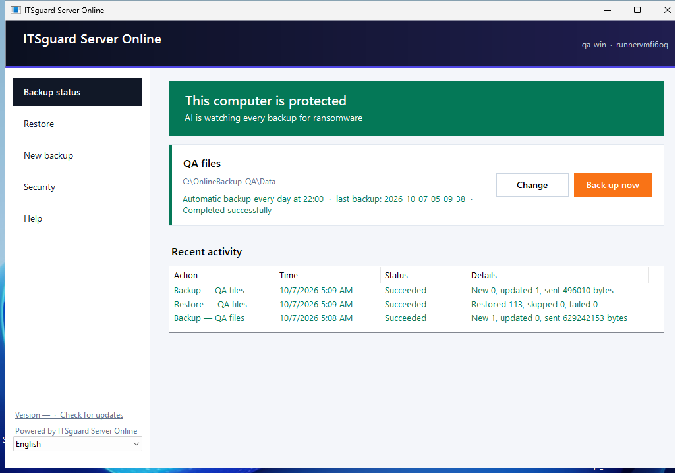


| Step | Result | Expected | Actual (what the oracle saw) | Screen |
|---|---|---|---|---|
| The backup is running | FAIL | a live run | live=False | |
| Stop the service (Windows service manager) while it backs up | FAIL | Stopped within 2 minutes, the run live when stopped | Stopped; live job when stopped '' | |
| The stopped run is closed on the server (not running) | FAIL | not live; THIS run (its job id) has a recorded result | live 0; job '': not recorded | |
| Backup after the stop - result | PASS | the server records a new run: ok; the window shows the result | server: BS_STOP_SUCCESS (new 0, bytes 0); window: Automatic backup every day at 22:00 · last backup: 2026-10-07-05-11-51 · Completed successfully ; messages: ITSguard Server Online: The backup has started | 05-Backup-after-the-stop---result.png |
| Restore after the stop - the source folder is deleted | PASS | no source folder (moved out of the product's reach until the check is done) | C:\OnlineBackup-QA\Data (kept by the robot in C:\obqa\source-aside-4) | |
| Accessibility | info | the field 'Password' has no name in UI Automation (a screen reader says only 'edit'); the robot found it under its label | ||
| Restore after the stop - sign-in when the Restore page opened | info | Sign in: Sign in Restoring and adding backups require your password. Password Verification code (if enabled) | ||
| Restore after the stop - Restore page | PASS | the backup, the latest point, the files, the folder | Restore | Backup | QA files | Restore point (date) | Latest — 2026-10-07-05-11-50 | Files (none selected = everything) | Filter by file or folder name | Restore to folder | C:\Users\runneradmin\Desktop\Restore | … | Replace existing files | Restore | Backup status | Restore | New backup | Security | Help | Version — · Check for updates | English | Powered by ITSguard Server Online | 07-Restore-after-the-stop---Restore-page.png |
| Accessibility | info | the field 'Restore to folder' has no name in UI Automation (a screen reader says only 'edit'); the robot found it under its label | ||
| Restore after the stop - messages | info | ITSguard Server Online: The restore has started — follow it in the "Backup status" tab | ||
| Restore after the stop - ORACLE: every restored file has the SHA-256 of the original | PASS | 113 files identical, nothing missing or extra | server: RESTORE_STOP_SUCCESS; files 113/113; differences 0: | |
| UX: Backup after the stop - the window shows the result of the backup | PASS | the card says the result | Automatic backup every day at 22:00 · last backup: 2026-10-07-05-11-51 · Completed successfully |
Evidence: windows-state.json · event-log.txt · service-events.txt · server-logs · 4-differences.txt · 4-restored.sha256

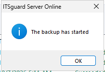

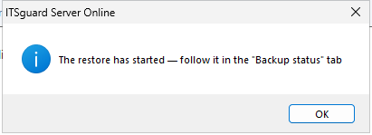
| Step | Result | Expected | Actual (what the oracle saw) | Screen |
|---|---|---|---|---|
| The backup is running | FAIL | a live run | live=False | |
| Kill the server process | FAIL | killed WHILE the run is live | pid 8604; live job '' | |
| Windows restarts the server by itself | PASS | Running with a new process within 3 minutes | Running pid 8340 | |
| No ghost run after the server came back | FAIL | nothing live for the set; THIS run (its job id) closed in the history | live 0; job '': never closed (an open run left behind) | |
| Backup after the server crash - result | PASS | the server records a new run: ok; the window shows the result | server: BS_STOP_SUCCESS (new 0, bytes 0); window: Automatic backup every day at 22:00 · last backup: 2026-10-07-05-16-22 · Completed successfully ; messages: ITSguard Server Online: The backup has started | 06-Backup-after-the-server-crash---result.png |
| Restore after the server crash - the source folder is deleted | PASS | no source folder (moved out of the product's reach until the check is done) | C:\OnlineBackup-QA\Data (kept by the robot in C:\obqa\source-aside-5) | |
| Restore after the server crash - Restore page | PASS | the backup, the latest point, the files, the folder | Restore | Backup | QA files | Restore point (date) | Latest — 2026-10-07-05-16-21 | Files (none selected = everything) | Filter by file or folder name | Restore to folder | C:\Users\runneradmin\Desktop\Restore | … | Replace existing files | Restore | Backup status | Restore | New backup | Security | Help | Version — · Check for updates | English | Powered by ITSguard Server Online | 07-Restore-after-the-server-crash---Restore-page.png |
| Accessibility | info | the field 'Restore to folder' has no name in UI Automation (a screen reader says only 'edit'); the robot found it under its label | ||
| Restore after the server crash - messages | info | ITSguard Server Online: The restore has started — follow it in the "Backup status" tab | ||
| Restore after the server crash - ORACLE: every restored file has the SHA-256 of the original | PASS | 113 files identical, nothing missing or extra | server: RESTORE_STOP_SUCCESS; files 113/113; differences 0: | |
| UX: Backup after the server crash - the window shows the result of the backup | PASS | the card says the result | Automatic backup every day at 22:00 · last backup: 2026-10-07-05-16-22 · Completed successfully |
Evidence: windows-state.json · event-log.txt · service-events.txt · server-logs · 5-differences.txt · 5-restored.sha256

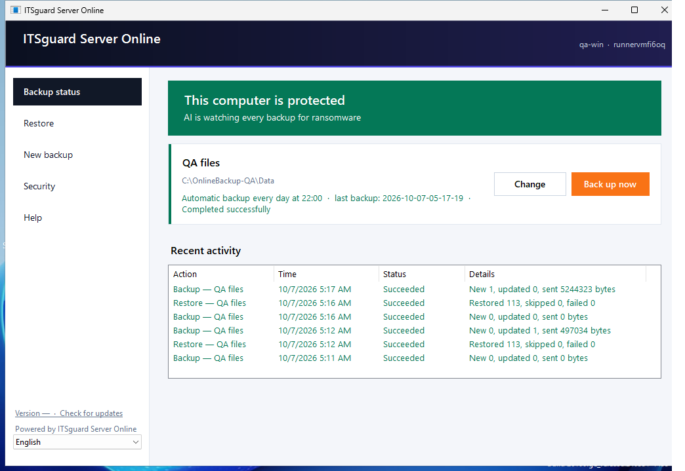

| Step | Result | Expected | Actual (what the oracle saw) | Screen |
|---|---|---|---|---|
| The file is really locked (another program cannot read it) | PASS | reading fails | Exception calling "ReadAllBytes" with "1" argument(s): "The process cannot access the file 'C:\OnlineBackup-QA\Data\Documents\locked.pst' because it is being used by another process." | |
| Backup with a locked file - result | PASS | the server records a new run: ok; the window shows the result | server: BS_STOP_SUCCESS (new 1, bytes 5244323); window: Automatic backup every day at 22:00 · last backup: 2026-10-07-05-17-19 · Completed successfully ; messages: ITSguard Server Online: The backup has started | 03-Backup-with-a-locked-file---result.png |
| No shadow copy is left on the computer after the run | PASS | shadow copies before = after (1) | before 1, after 1 | |
| Restore with the locked file - the source folder is deleted | PASS | no source folder (moved out of the product's reach until the check is done) | C:\OnlineBackup-QA\Data (kept by the robot in C:\obqa\source-aside-6) | |
| Restore with the locked file - Restore page | PASS | the backup, the latest point, the files, the folder | Restore | Backup | QA files | Restore point (date) | Latest — 2026-10-07-05-17-19 | Files (none selected = everything) | Filter by file or folder name | Restore to folder | C:\Users\runneradmin\Desktop\Restore | … | Replace existing files | Restore | Backup status | Restore | New backup | Security | Help | Version — · Check for updates | English | Powered by ITSguard Server Online | 04-Restore-with-the-locked-file---Restore-page.png |
| Accessibility | info | the field 'Restore to folder' has no name in UI Automation (a screen reader says only 'edit'); the robot found it under its label | ||
| Restore with the locked file - messages | info | ITSguard Server Online: The restore has started — follow it in the "Backup status" tab | ||
| Restore with the locked file - ORACLE: every restored file has the SHA-256 of the original | PASS | 114 files identical, nothing missing or extra | server: RESTORE_STOP_SUCCESS; files 114/114; differences 0: | |
| UX: Backup with a locked file - the window shows the result of the backup | PASS | the card says the result | Automatic backup every day at 22:00 · last backup: 2026-10-07-05-17-19 · Completed successfully |
Evidence: windows-state.json · event-log.txt · service-events.txt · server-logs · 6-differences.txt · 6-restored.sha256

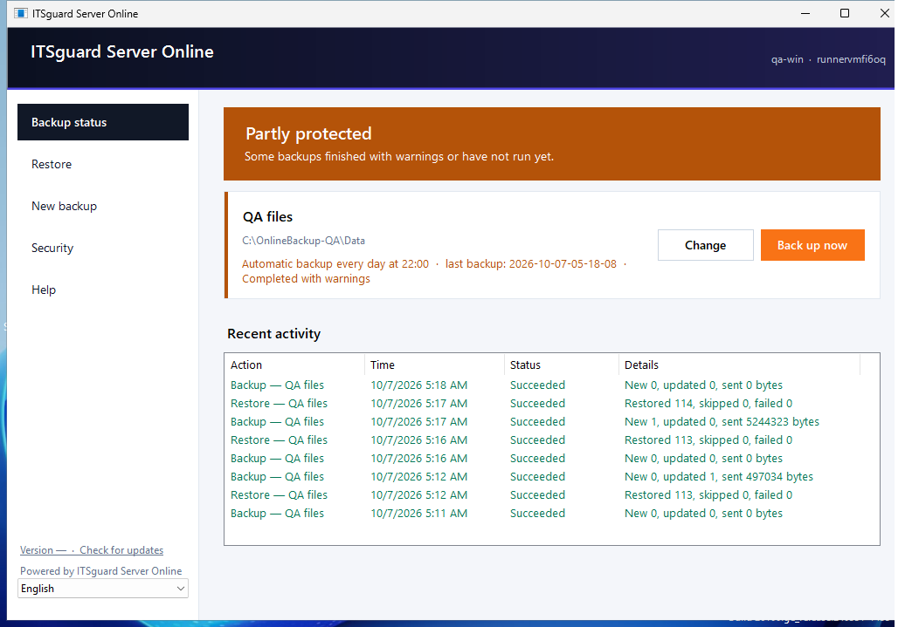

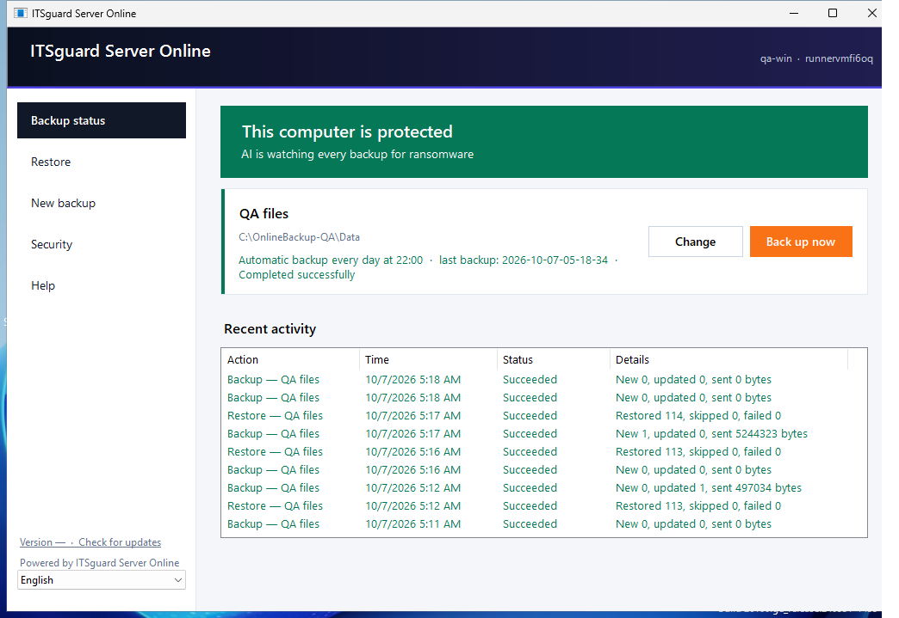

| Step | Result | Expected | Actual (what the oracle saw) | Screen |
|---|---|---|---|---|
| Disable the Volume Shadow Copy service | PASS | VSS disabled and stopped | Stopped Disabled | |
| Backup without VSS - result | PASS | the server records a new run: not-ok; the window shows the result | server: BS_STOP_SUCCESS_WITH_WARNING (new 0, bytes 0); window: Automatic backup every day at 22:00 · last backup: 2026-10-07-05-18-08 · Completed with warnings ; messages: ITSguard Server Online: The backup has started | 03-Backup-without-VSS---result.png |
| The result names the problem (not a plain success) | FAIL | warning or error; the log names the locked file or the shadow copy | result BS_STOP_SUCCESS_WITH_WARNING; log mentions: | |
| Recovery: enable VSS again | PASS | Manual | Stopped Manual | |
| Backup with VSS back - result | PASS | the server records a new run: ok; the window shows the result | server: BS_STOP_SUCCESS (new 0, bytes 0); window: Automatic backup every day at 22:00 · last backup: 2026-10-07-05-18-34 · Completed successfully ; messages: ITSguard Server Online: The backup has started | 06-Backup-with-VSS-back---result.png |
| Restore after VSS came back - the source folder is deleted | PASS | no source folder (moved out of the product's reach until the check is done) | C:\OnlineBackup-QA\Data (kept by the robot in C:\obqa\source-aside-7) | |
| Restore after VSS came back - Restore page | PASS | the backup, the latest point, the files, the folder | Restore | Backup | QA files | Restore point (date) | Latest — 2026-10-07-05-18-34 | Files (none selected = everything) | Filter by file or folder name | Restore to folder | C:\Users\runneradmin\Desktop\Restore | … | Replace existing files | Restore | Backup status | Restore | New backup | Security | Help | Version — · Check for updates | English | Powered by ITSguard Server Online | 07-Restore-after-VSS-came-back---Restore-page.png |
| Accessibility | info | the field 'Restore to folder' has no name in UI Automation (a screen reader says only 'edit'); the robot found it under its label | ||
| Restore after VSS came back - messages | info | ITSguard Server Online: The restore has started — follow it in the "Backup status" tab | ||
| Restore after VSS came back - ORACLE: every restored file has the SHA-256 of the original | PASS | 114 files identical, nothing missing or extra | server: RESTORE_STOP_SUCCESS; files 114/114; differences 0: | |
| UX: Backup without VSS - the window shows the result of the backup | PASS | the card says the result | Automatic backup every day at 22:00 · last backup: 2026-10-07-05-18-08 · Completed with warnings | |
| UX: Backup with VSS back - the window shows the result of the backup | PASS | the card says the result | Automatic backup every day at 22:00 · last backup: 2026-10-07-05-18-34 · Completed successfully |
Evidence: windows-state.json · event-log.txt · service-events.txt · server-logs · 7-differences.txt · 7-restored.sha256


| Step | Result | Expected | Actual (what the oracle saw) | Screen |
|---|---|---|---|---|
| Deny the service (SYSTEM) reading one folder | PASS | icacls deny | processed file: C:\OnlineBackup-QA\Data\Documents Successfully processed 1 files; Failed processing 0 files | |
| Backup with a denied folder - result | PASS | the server records a new run: bad; the window shows the result | server: BS_STOP_SUCCESS_WITH_ERROR (new 0, bytes 0); window: Automatic backup every day at 22:00 · last backup: 2026-10-07-05-19-27 · Completed with warnings ; messages: ITSguard Server Online: The backup has started | 03-Backup-with-a-denied-folder---result.png |
| The run is "completed with errors" and names the folder | PASS | BS_STOP_SUCCESS_WITH_ERROR | result BS_STOP_SUCCESS_WITH_ERROR | |
| Restore: the denied folder's files are still in the backup - the source folder is deleted | PASS | no source folder (moved out of the product's reach until the check is done) | C:\OnlineBackup-QA\Data (kept by the robot in C:\obqa\source-aside-8) | |
| Restore: the denied folder's files are still in the backup - Restore page | PASS | the backup, the latest point, the files, the folder | Restore | Backup | QA files | Restore point (date) | Latest — 2026-10-07-05-19-26 | Files (none selected = everything) | Filter by file or folder name | Restore to folder | C:\Users\runneradmin\Desktop\Restore | … | Replace existing files | Restore | Backup status | Restore | New backup | Security | Help | Version — · Check for updates | English | Powered by ITSguard Server Online | 04-Restore--the-denied-folder-s-files-are-still-in-the-backup---Restore-page.png |
| Accessibility | info | the field 'Restore to folder' has no name in UI Automation (a screen reader says only 'edit'); the robot found it under its label | ||
| Restore: the denied folder's files are still in the backup - messages | info | ITSguard Server Online: The restore has started — follow it in the "Backup status" tab | ||
| Restore: the denied folder's files are still in the backup - ORACLE: every restored file has the SHA-256 of the original | PASS | 114 files identical, nothing missing or extra | server: RESTORE_STOP_SUCCESS; files 114/114; differences 0: | |
| Backup after the permission is back - result | PASS | the server records a new run: ok; the window shows the result | server: BS_STOP_SUCCESS (new 0, bytes 0); window: Automatic backup every day at 22:00 · last backup: 2026-10-07-05-20-18 · Completed successfully ; messages: ITSguard Server Online: The backup has started | 10-Backup-after-the-permission-is-back---result.png |
| UX: Backup with a denied folder - the window shows the result of the backup | PASS | the card says the result | Automatic backup every day at 22:00 · last backup: 2026-10-07-05-19-27 · Completed with warnings | |
| UX: Backup after the permission is back - the window shows the result of the backup | PASS | the card says the result | Automatic backup every day at 22:00 · last backup: 2026-10-07-05-20-18 · Completed successfully |
Evidence: windows-state.json · event-log.txt · service-events.txt · server-logs · 8-differences.txt · 8-restored.sha256
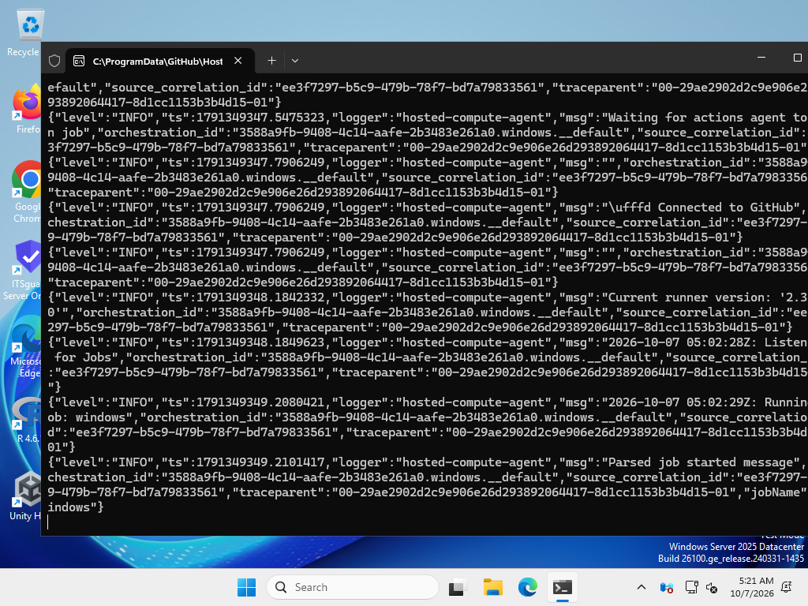


| Step | Result | Expected | Actual (what the oracle saw) | Screen |
|---|---|---|---|---|
| The service cannot start (Windows says so) | PASS | Start-Service fails or the service stops again | error: Service 'ITSguard Server Online (OnlineBackupAgent)' cannot be started due to the following error: Cannot start service OnlineBackupAgent on computer '.'.; state Stopped | |
| The program window | info | not found; processes: || desktop: explorer(1876) '' Shell_TrayWnd 1024x48; WindowsTerminal(7928) 'C:\ProgramData\GitHub\HostedComputeAgent\hosted-compute-agent' CASCADIA_HOSTING_WINDOW_CLASS 1044x635; SystemPropertiesPerformance(6128) 'System Properties' #32770 420x192; explorer(1876) '' EdgeUiInputTopWndClass 1009x4; explorer(1876) 'Program Manager' Progman 1024x768; || UIA per window: no process OnlineBackup.Client || last error while waiting: | ||
| Maintenance - Setup sees the installation (repair) | FAIL | "already installed" with the choices | Welcome to the ITSguard Server Online setup | This installs ITSguard Server Online on this computer. It backs up your files to your provider's backup server, encrypted on this computer before they leave. | Computer: runnervmfi6oq | Click Next to continue, or Cancel to exit. | English | Next | Cancel | 03-Maintenance---Setup-sees-the-installation--repair-.png |
| After Repair: the file is back and the service runs | FAIL | OnlineBackup.Agent.exe present, Running | Stopped | |
| The program window | info | not found; processes: || desktop: explorer(1876) '' Shell_TrayWnd 1024x48; Setup(1984) 'ITSguard Server Online' WindowsForms10.Window.8.app.0.1569a64_r6_ad1 786x709; WindowsTerminal(7928) 'C:\ProgramData\GitHub\HostedComputeAgent\hosted-compute-agent' CASCADIA_HOSTING_WINDOW_CLASS 1044x635; SystemPropertiesPerformance(6128) 'System Properties' #32770 420x192; explorer(1876) '' EdgeUiInputTopWndClass 1009x4; explorer(1876) 'Program Manager' Progman 1024x768; || UIA per window: no process OnlineBackup.Client || last error while waiting: | ||
| the journey stopped | FAIL | no error | You cannot call a method on a null-valued expression. @ line 362 | 04-stopped.png |
| UX: Client: when the service is not running the window says so and what to do | FAIL | a clear message |
Evidence: windows-state.json · event-log.txt · service-events.txt · server-logs
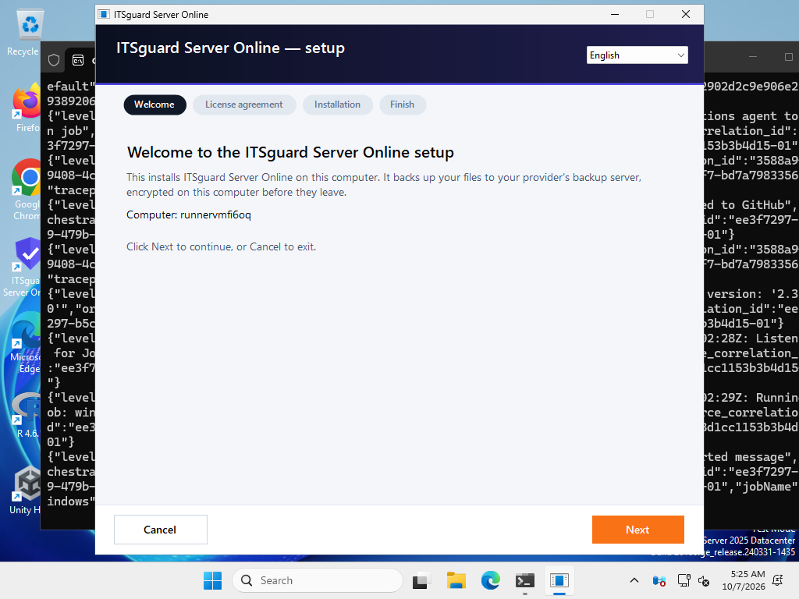
| Step | Result | Expected | Actual (what the oracle saw) | Screen |
|---|---|---|---|---|
| The server is updated to the newer package (install-server.ps1, update mode) | PASS | Running, the newer client offered | Running; package 0.2.22 | |
| The program window | info | not found; processes: || desktop: explorer(1876) '' Shell_TrayWnd 1024x48; Setup(1984) 'ITSguard Server Online' WindowsForms10.Window.8.app.0.1569a64_r6_ad1 786x709; WindowsTerminal(7928) 'C:\ProgramData\GitHub\HostedComputeAgent\hosted-compute-agent' CASCADIA_HOSTING_WINDOW_CLASS 1044x635; SystemPropertiesPerformance(6128) 'System Properties' #32770 420x192; explorer(1876) '' EdgeUiInputTopWndClass 1009x4; explorer(1876) 'Program Manager' Progman 1024x768; || UIA per window: no process OnlineBackup.Client || last error while waiting: | ||
| the journey stopped | FAIL | no error | You cannot call a method on a null-valued expression. @ line 373 | 01-stopped.png |
Evidence: windows-state.json · event-log.txt · service-events.txt · server-logs


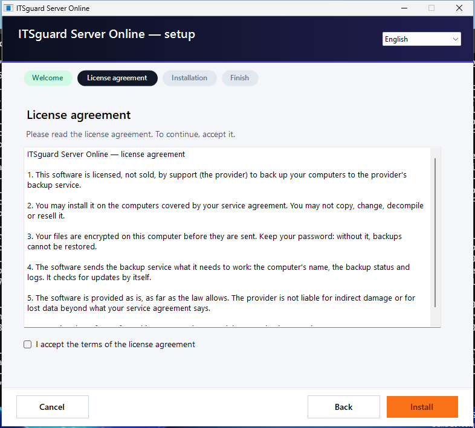
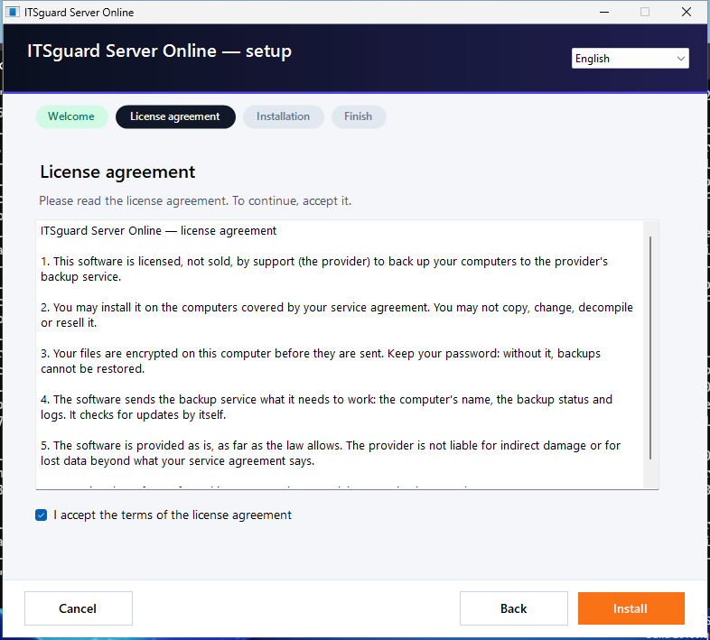
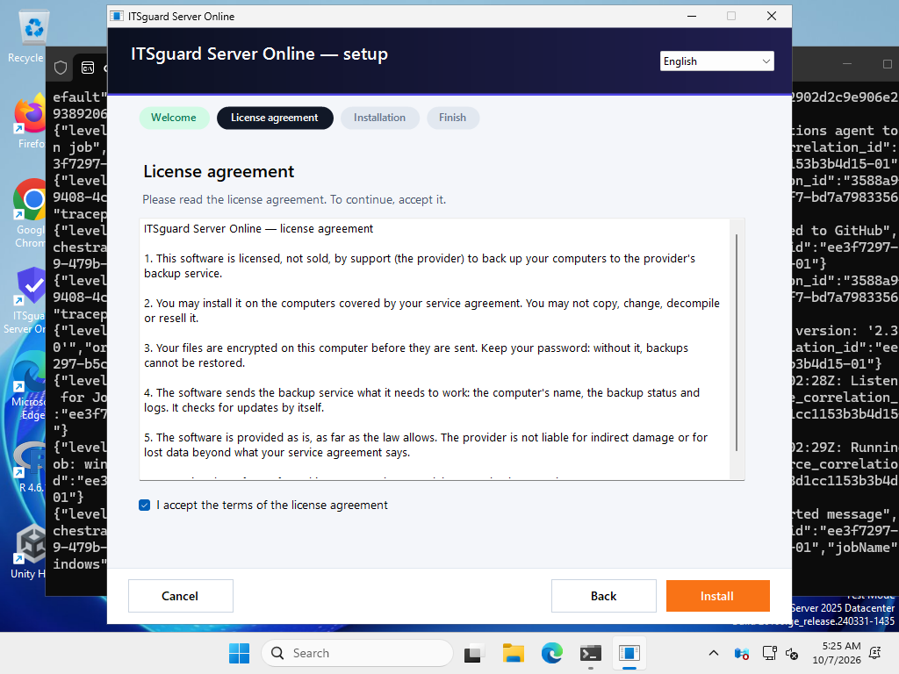

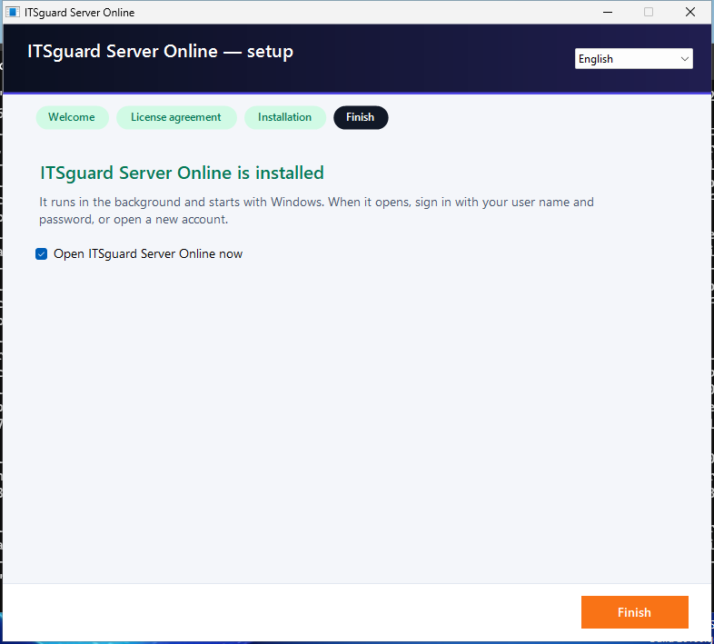
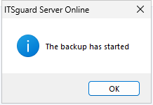

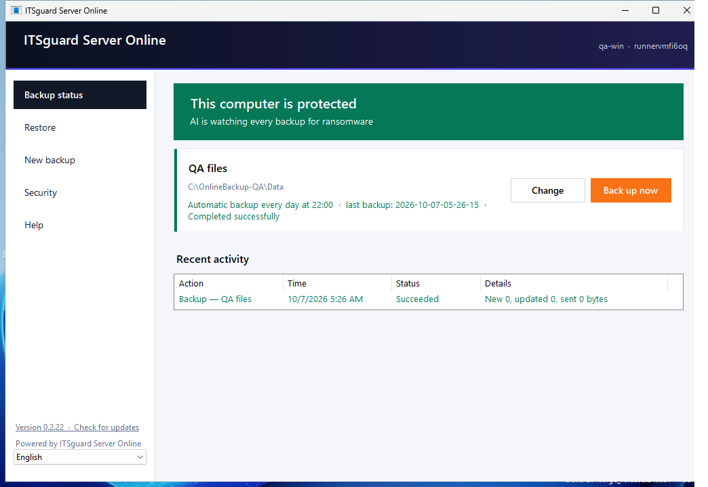
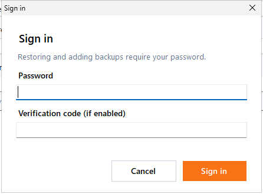


| Step | Result | Expected | Actual (what the oracle saw) | Screen |
|---|---|---|---|---|
| Maintenance - Setup sees the installation (remove) | FAIL | "already installed" with the choices | Welcome to the ITSguard Server Online setup | This installs ITSguard Server Online on this computer. It backs up your files to your provider's backup server, encrypted on this computer before they leave. | Computer: runnervmfi6oq | Click Next to continue, or Cancel to exit. | English | Next | Cancel | 01-Maintenance---Setup-sees-the-installation--remove-.png |
| Removed: no service, no entry in the installed programs, no program files | FAIL | all gone | service True; entries 1; files False | |
| Removed: the backups are still on the server | PASS | the set and its runs are on the server | 13 runs | |
| Setup.exe opens its window | PASS | the setup window within 120 s | ITSguard Server Online | |
| Installer 01 - Welcome | PASS | Welcome, the product, Next and Cancel | Welcome to the ITSguard Server Online setup | This installs ITSguard Server Online on this computer. It backs up your files to your provider's backup server, encrypted on this computer before they leave. | Computer: runnervmfi6oq | Click Next to continue, or Cancel to exit. | English | Next | Cancel | 02-Installer-01---Welcome.png |
| Installer 02 - License agreement | PASS | the license text and an accept box | License agreement | Please read the license agreement. To continue, accept it. | ITSguard Server Online — license agreement 1. This software is licensed, not sold, by support (the provider) to back up your computers to the provider's backup service. 2. You may install it on the computers covered by your service agreement. You may not copy, change, decompile or resell it. 3. Your files are encrypted on this computer before they are sent. Keep your password: without it, backups cannot be restored. 4. The software sends the backup service what it needs to work: the computer's name, the backup status and logs. It checks for updates by itself. 5. The software is provided as is, as far as the law allows. The provider is not liable for indirect damage or for lost data beyond what your service agreement says. 6. Removing the software from this computer does not delete your backups on the server. | I accept the terms of the license agreement | English | Back | Install | Cancel | 03-Installer-02---License-agreement.png |
| Install is disabled before the license is accepted | PASS | not enabled | enabled=False | |
| Back returns to Welcome, Next comes back | PASS | Welcome, then the license again | Welcome to the ITSguard Server Online setup | This installs ITSguard Server Online on this computer. It backs up your files to your provider's backup server, encrypted on this computer before they leave. | Computer: runnervmfi6oq | Click Next to continue, or Cancel to exit. | English | Next | Cancel | |
| Accept the license (tick the box) | PASS | ticked, Install enabled | ticked= install enabled=True | |
| Installer pages that exist | info | Welcome -> License agreement -> Installation (progress) -> Finish. There is no configuration page (folder, options) and no "Ready to install" page in the current installer. | ||
| Installer 04 - Installing (progress) | PASS | an "Installing" page with a progress bar | Installing ITSguard Server Online… | Please wait. This takes about a minute. | • ITSguard Server Online — https://localhost:8443 | • Installed to C:\Program Files\ITSguard Server Online | • [SC] CreateService FAILED 1073: The specified service already exists. [SC] ChangeServiceConfig2 SUCCESS SERVICE_NAME: OnlineBackupAgent TYPE : 10 WIN32_OWN_PROCESS STATE : 2 START_PENDING (STOPPABLE, NOT_PAUSABLE, ACCEPTS_SHUTDOWN) WIN32_EXIT_CODE : 0 (0x0) SERVICE_EXIT_CODE : 0 (0x0) CHECKPOINT : 0x0 WAIT_HINT : 0x0 PID : 6864 FLAGS : Service OnlineBackupAgent: RUNNING | English | Cancel | 06-Installer-04---Installing--progress-.png |
| Installer 05 - Finish | PASS | the Finish page says it is installed | ITSguard Server Online is installed | It runs in the background and starts with Windows. When it opens, sign in with your user name and password, or open a new account. | Open ITSguard Server Online now | English | Finish | 07-Installer-05---Finish.png |
| The setup window closes after Finish | PASS | no setup window | 0 window(s) left | |
| After reinstall | info | the program was still connected (settings kept), no sign-in asked | ||
| After reinstall the backup set is there | PASS | 'QA files' | This computer is protected | AI is watching every backup for ransomware | Change | Back up now | QA files | C:\OnlineBackup-QA\Data | Automatic backup every day at 22:00 · last backup: 2026-10-07-05-20-18 · Completed successfully | Backup status | Restore | New backup | Security | Help | Version 0.2.22 · Check for updates | English | Powered by ITSguard Server Online | 08-After-reinstall-the-backup-set-is-there.png |
| Backup after reinstall - result | PASS | the server records a new run: ok; the window shows the result | server: BS_STOP_SUCCESS (new 0, bytes 0); window: Automatic backup every day at 22:00 · last backup: 2026-10-07-05-26-15 · Completed successfully ; messages: ITSguard Server Online: The backup has started | 11-Backup-after-reinstall---result.png |
| Restore after reinstall - the source folder is deleted | PASS | no source folder (moved out of the product's reach until the check is done) | C:\OnlineBackup-QA\Data (kept by the robot in C:\obqa\source-aside-9) | |
| Accessibility | info | the field 'Password' has no name in UI Automation (a screen reader says only 'edit'); the robot found it under its label | ||
| Restore after reinstall - sign-in when the Restore page opened | info | Sign in: Sign in Restoring and adding backups require your password. Password Verification code (if enabled) | ||
| Restore after reinstall - Restore page | PASS | the backup, the latest point, the files, the folder | Restore | Backup | QA files | Restore point (date) | Latest — 2026-10-07-05-26-14 | Files (none selected = everything) | Filter by file or folder name | Restore to folder | C:\Users\runneradmin\Desktop\Restore | … | Replace existing files | Restore | Backup status | Restore | New backup | Security | Help | Version 0.2.22 · Check for updates | English | Powered by ITSguard Server Online | 13-Restore-after-reinstall---Restore-page.png |
| Accessibility | info | the field 'Restore to folder' has no name in UI Automation (a screen reader says only 'edit'); the robot found it under its label | ||
| Restore after reinstall - messages | info | ITSguard Server Online: The restore has started — follow it in the "Backup status" tab | ||
| Restore after reinstall - ORACLE: every restored file has the SHA-256 of the original | PASS | 114 files identical, nothing missing or extra | server: RESTORE_STOP_SUCCESS; files 114/114; differences 0: | |
| UX: Installer: the first page says what will be installed | PASS | the product name and what it does | Welcome to the ITSguard Server Online setup | This installs ITSguard Server Online on this computer. It backs up your files to your provider's backup server, encrypted on this computer before they leave. | Computer: runnervmfi6oq | Click Next to continue, or Cancel to exit. | English | Next | Cancel | |
| UX: Installer: a license agreement must be accepted before installing | PASS | Install disabled until accepted | enabled=False | |
| UX: Installer: a "Ready to install" summary before installing | FAIL | a page listing what will be installed and where | the license page's button installs at once (no configuration or ready page) | |
| UX: Installer: progress is visible while installing | PASS | a progress bar and what is being done | see the screenshot | |
| UX: Installer: the last page says the result and what to do next | PASS | installed + how to sign in | ITSguard Server Online is installed | It runs in the background and starts with Windows. When it opens, sign in with your user name and password, or open a new account. | Open ITSguard Server Online now | English | Finish | |
| UX: Backup after reinstall - the window shows the result of the backup | PASS | the card says the result | Automatic backup every day at 22:00 · last backup: 2026-10-07-05-26-15 · Completed successfully |
Evidence: windows-state.json · event-log.txt · service-events.txt · server-logs · 9-differences.txt · 9-restored.sha256
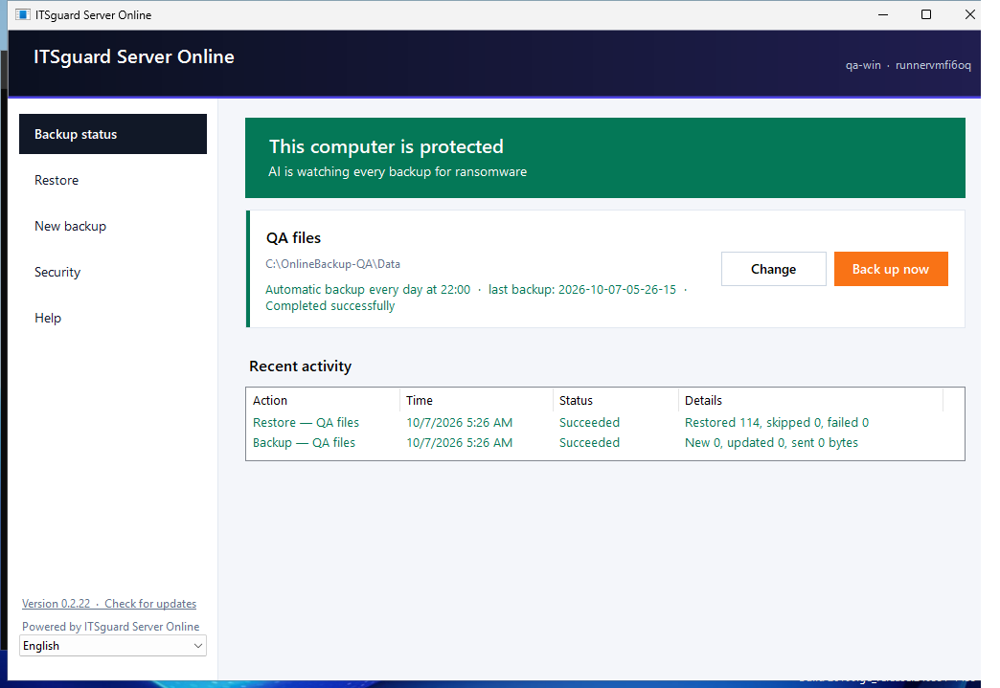
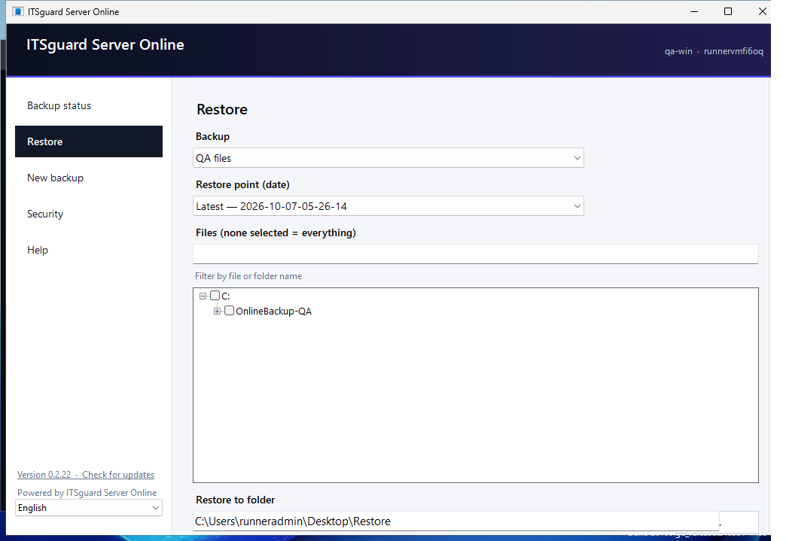
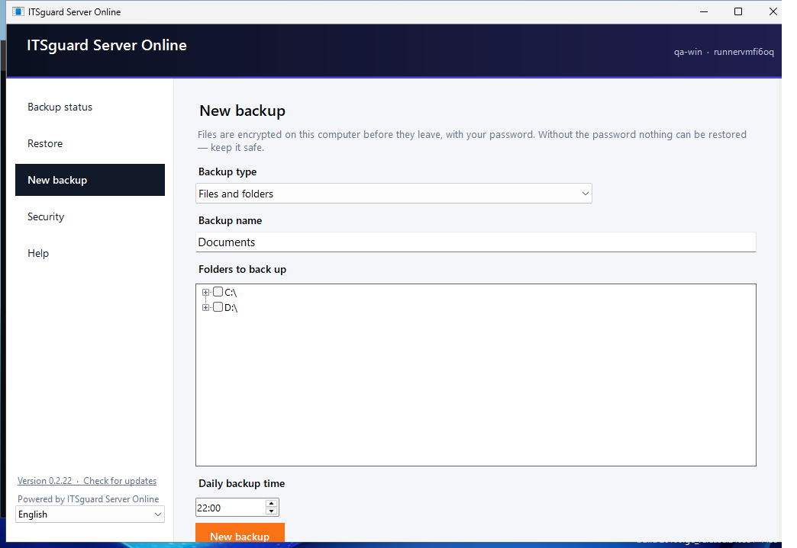
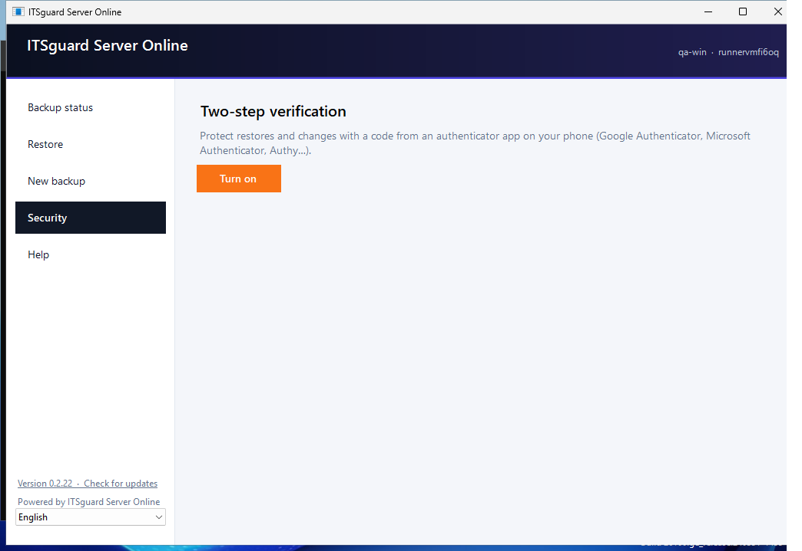
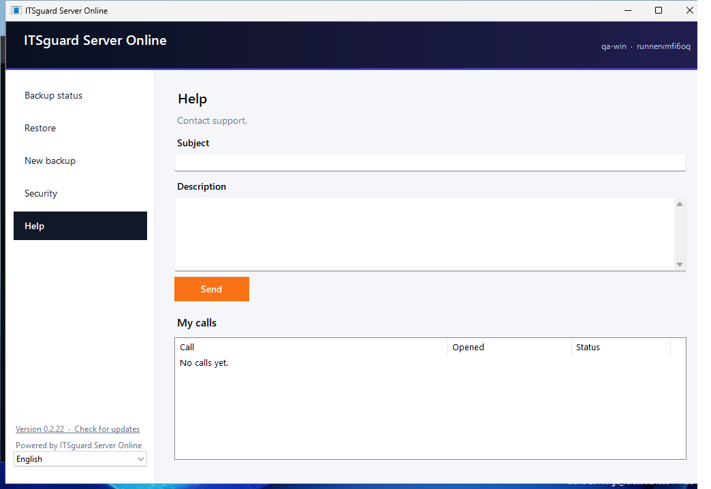
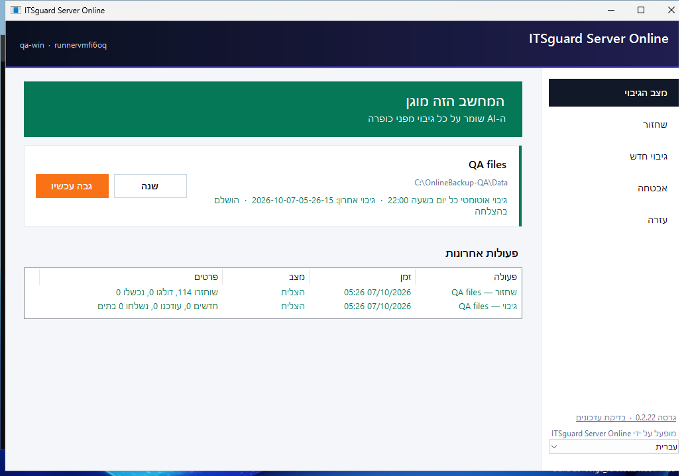
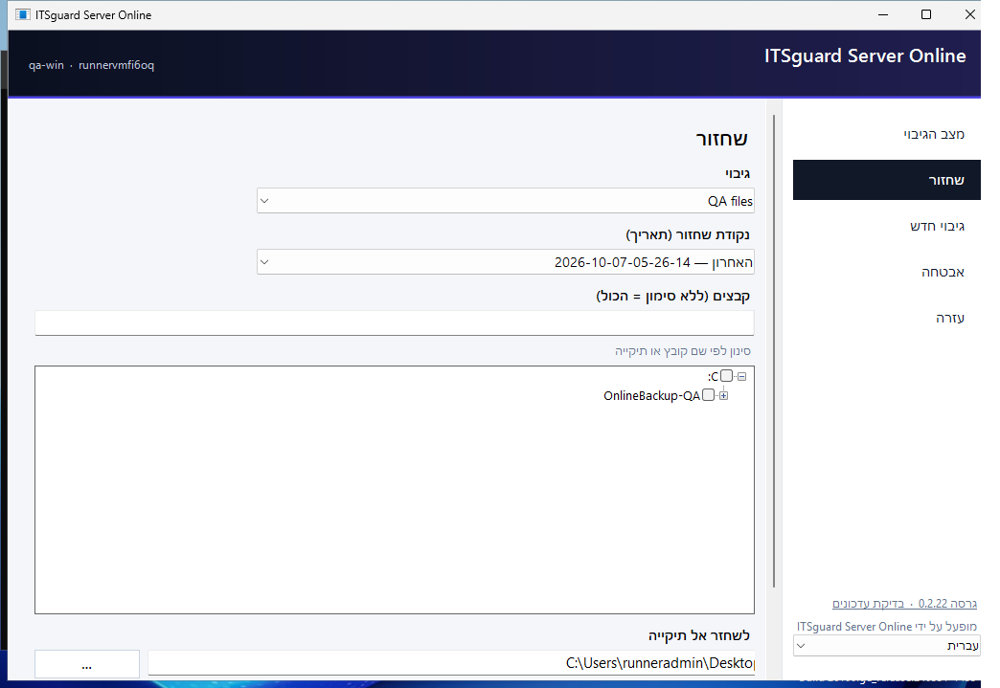
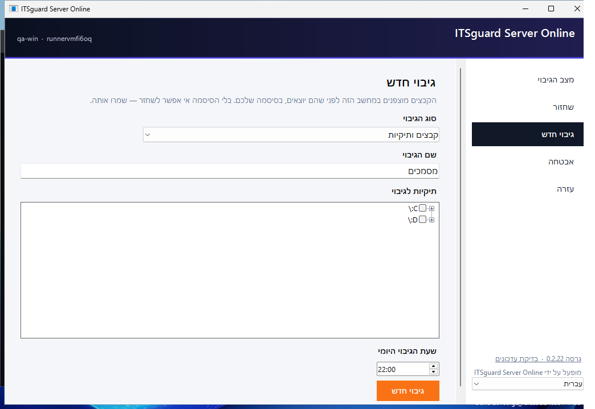
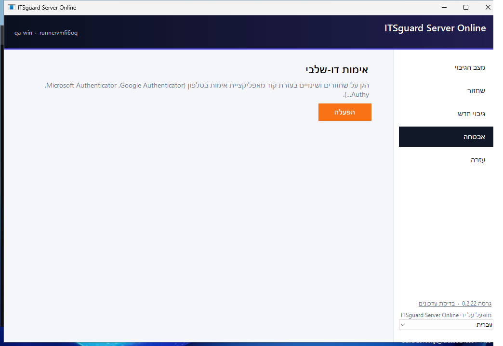
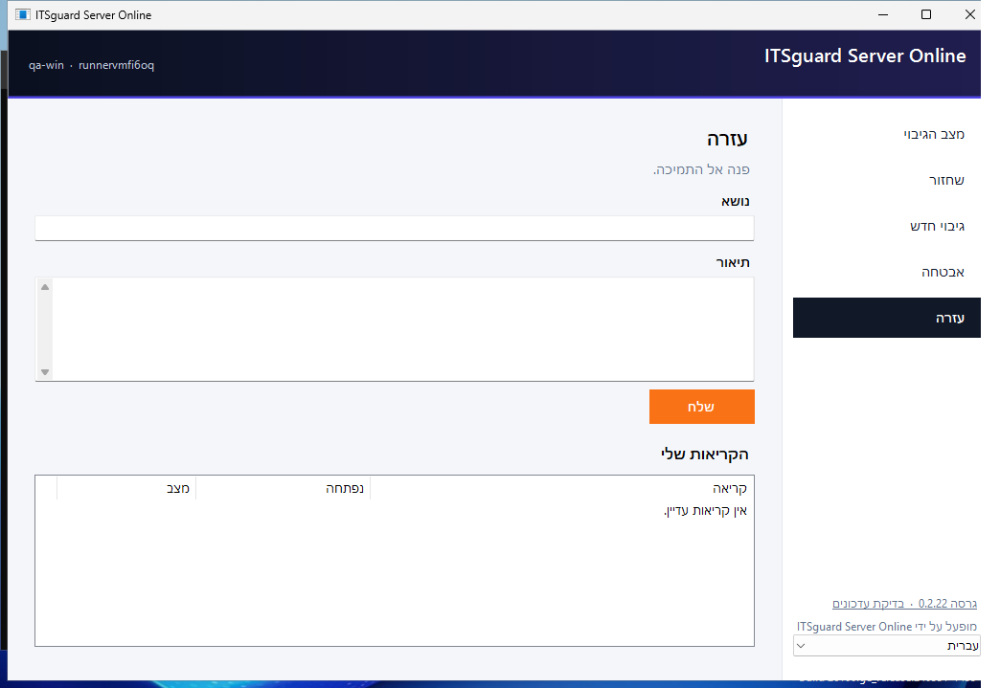
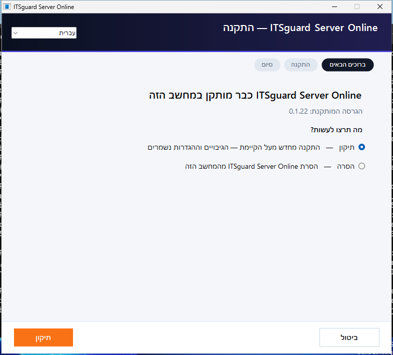
| Step | Result | Expected | Actual (what the oracle saw) | Screen |
|---|---|---|---|---|
| Resolution 1920x1080 | info | NOT TESTED: asked 1920x1080, the screen is 1024x768 | ||
| Resolution 1366x768 | info | NOT TESTED: asked 1366x768, the screen is 1024x768 | ||
| Tour: the program window opens (en, 1024x768) | PASS | the window | pid 3440 window 'ITSguard Server Online' handle 1966652 responding True | |
| Tour: the program window opens (he, 1024x768) | PASS | the window | pid 5948 window 'ITSguard Server Online' handle 6423106 responding True | |
| DPI | info | 125% and 150%: NOT TESTED in this job - the scale of a Windows session changes only after signing out, and a hosted runner cannot sign out; screen DPI here: 100% |
Evidence: windows-state.json · event-log.txt · service-events.txt · server-logs
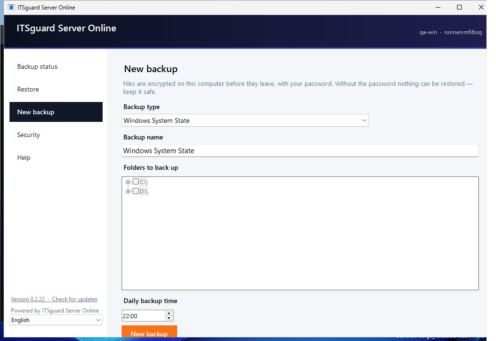
| Step | Result | Expected | Actual (what the oracle saw) | Screen |
|---|---|---|---|---|
| Windows Server Backup feature | PASS | installed | Success restart=No | |
| The type list shows Windows System State | PASS | System State chosen | list: Windows System State | |
| The System State set is added | FAIL | was added | ITSguard Server Online: No folders were chosen for backup. | |
| The System State backup finishes successfully (server record) | PASS | ok | BS_STOP_SUCCESS bytes 0 | 04-The-System-State-backup-finishes-successfully--server-record-.png |
| System State restore | info | NOT TESTED: restoring the system state of the test machine would replace its own registry and boot files; only the backup is tested here |
Evidence: windows-state.json · event-log.txt · service-events.txt · server-logs
Evidence: windows-state.json · event-log.txt · service-events.txt · server-logs
Findings are for a person to judge with the screenshot. A change of the screens' flow needs the owner's approval first.